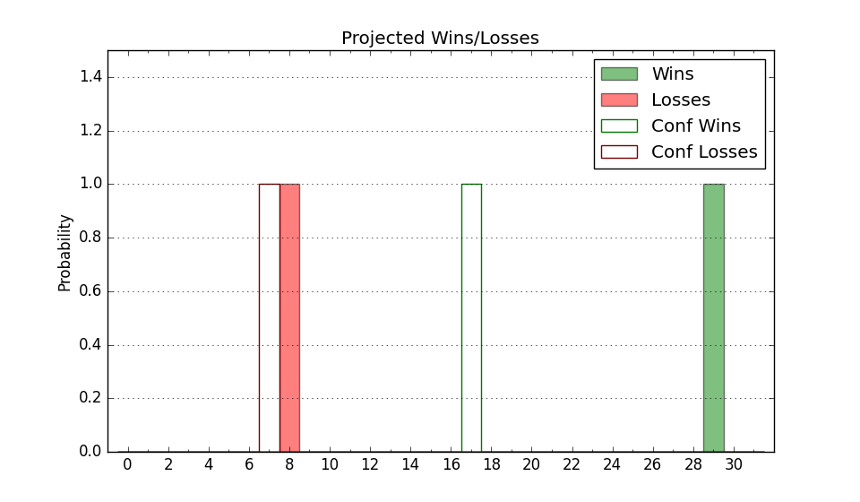

| Home | Game Probabilities | Conferences | Preseason Predictions | Odds Charts | NCAA Tournament |
| City: | West Lafayette, Indiana | |
| Conference: | Big Ten (1st)
| |
| Record: | 17-3 (Conf) 30-4 (Overall) | |
| Ratings: | Comp.: 33.8 (3rd) Net: 33.8 (3rd) Off: 127.3 (3rd) Def: 93.5 (14th) SoR: 97.6 (2nd) |
| Remaining | ||||||
|---|---|---|---|---|---|---|
| Date | Opponent | Win Prob | Pred. | |||
| 3/24 | (N) Utah St. (48) | 84.3% | W 84-72 | |||
| Previous | Game Score | |||||
| Date | Opponent | Win Prob | Result | Off | Def | Net |
| 11/6 | Samford (94) | 95.3% | W 98-45 | 2.6 | 42.0 | 44.6 |
| 11/10 | Morehead St. (116) | 96.8% | W 87-57 | 3.0 | 10.2 | 13.2 |
| 11/13 | Xavier (63) | 93.0% | W 83-71 | -8.2 | -2.2 | -10.4 |
| 11/20 | (N) Gonzaga (14) | 70.0% | W 73-63 | -17.7 | 25.9 | 8.2 |
| 11/21 | (N) Tennessee (7) | 63.7% | W 71-67 | -16.5 | 12.6 | -4.0 |
| 11/22 | (N) Marquette (16) | 70.4% | W 78-75 | -4.1 | -4.9 | -8.9 |
| 11/28 | Texas Southern (278) | 99.3% | W 99-67 | 0.6 | -6.2 | -5.5 |
| 12/1 | @Northwestern (44) | 73.2% | L 88-92 | -10.9 | -9.8 | -20.7 |
| 12/4 | Iowa (51) | 91.6% | W 87-68 | 7.4 | 2.0 | 9.4 |
| 12/9 | (N) Alabama (12) | 66.6% | W 92-86 | 2.8 | -1.9 | 0.9 |
| 12/16 | (N) Arizona (4) | 53.6% | W 92-84 | 9.6 | 2.0 | 11.6 |
| 12/21 | Jacksonville (279) | 99.3% | W 100-57 | -5.3 | 9.2 | 3.8 |
| 12/29 | Eastern Kentucky (226) | 98.9% | W 80-53 | -18.3 | 13.0 | -5.3 |
| 1/2 | @Maryland (70) | 80.9% | W 67-53 | -2.1 | 12.7 | 10.6 |
| 1/5 | Illinois (10) | 78.6% | W 83-78 | 2.0 | -3.7 | -1.7 |
| 1/9 | @Nebraska (37) | 71.2% | L 72-88 | -7.4 | -20.5 | -27.9 |
| 1/13 | Penn St. (76) | 94.2% | W 95-78 | 8.0 | -7.1 | 0.8 |
| 1/16 | @Indiana (93) | 85.5% | W 87-66 | 3.6 | 6.8 | 10.4 |
| 1/20 | @Iowa (51) | 76.2% | W 84-70 | 0.8 | 9.1 | 9.9 |
| 1/23 | Michigan (119) | 96.9% | W 99-67 | 10.1 | -3.4 | 6.7 |
| 1/28 | @Rutgers (104) | 88.0% | W 68-60 | -5.7 | -2.6 | -8.3 |
| 1/31 | Northwestern (44) | 90.3% | W 105-96 | 15.2 | -27.0 | -11.8 |
| 2/4 | @Wisconsin (19) | 63.2% | W 75-69 | -0.2 | 7.4 | 7.2 |
| 2/10 | Indiana (93) | 95.3% | W 79-59 | -8.3 | 8.9 | 0.6 |
| 2/15 | Minnesota (80) | 94.4% | W 84-76 | 0.3 | -20.4 | -20.1 |
| 2/18 | @Ohio St. (46) | 73.5% | L 69-73 | -5.0 | -11.7 | -16.7 |
| 2/22 | Rutgers (104) | 96.2% | W 96-68 | 29.4 | -17.9 | 11.5 |
| 2/25 | @Michigan (119) | 90.1% | W 84-76 | 0.5 | -12.0 | -11.6 |
| 3/2 | Michigan St. (18) | 85.2% | W 80-74 | 9.6 | -10.4 | -0.8 |
| 3/5 | @Illinois (10) | 51.8% | W 77-71 | 2.4 | 8.0 | 10.4 |
| 3/10 | Wisconsin (19) | 85.4% | W 78-70 | -5.7 | -0.3 | -5.9 |
| 3/15 | (N) Michigan St. (18) | 75.7% | W 67-62 | -16.6 | 8.8 | -7.8 |
| 3/16 | (N) Wisconsin (19) | 76.0% | L 75-76 | -11.7 | 3.0 | -8.7 |
| 3/22 | (N) Grambling St. (286) | 98.8% | W 78-50 | -2.1 | 3.3 | 1.2 |
| Stats & Trends | |||||
|---|---|---|---|---|---|
| Current | Day | Week | Month | Season | |
| Composite | 33.8 | +0.1 | +0.1 | -0.1 | +2.1 |
| Comp Rank | 3 | -- | -- | -- | -2 |
| Net Efficiency | 33.8 | +0.1 | +0.1 | -0.1 | -- |
| Net Rank | 3 | -- | -- | -- | -- |
| Off Efficiency | 127.3 | +0.1 | -0.0 | +0.7 | -- |
| Off Rank | 3 | -- | -- | -1 | -- |
| Def Efficiency | 93.5 | +0.0 | +0.1 | -0.8 | -- |
| Def Rank | 14 | +1 | +3 | -1 | -- |
| SoS Rank | 5 | -1 | -3 | -3 | -- |
| Exp. Wins | 30.0 | -- | +1.0 | +2.9 | +5.5 |
| Exp. Conf Wins | 17.0 | -- | -- | +0.9 | +1.7 |
| Conf Champ Prob | 100.0 | -- | -- | +0.6 | +48.8 |

| Advanced Stats | ||
|---|---|---|
| Stat | Value | Rank |
| Off Eff FG % | 0.595 | 7 |
| Off Ast Ratio | 0.203 | 3 |
| Off ORB% | 0.401 | 5 |
| Off TO Rate | 0.133 | 79 |
| Off FT Ratio | 0.464 | 4 |
| Def Eff FG % | 0.445 | 12 |
| Def Ast Ratio | 0.137 | 128 |
| Def ORB% | 0.214 | 9 |
| Def TO Rate | 0.133 | 285 |
| Def FT Ratio | 0.209 | 2 |